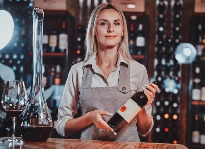

Inicio
História
Armazenamento
Formulário
Tabela
A Vinharia Agnello é uma tradicional empresa familiar localizada em São Paulo, com mais de 15 anos de experiência no mercado de vinhos. Reconhecida pelo seu atendimento diferenciado, a vinheria se destaca pelo conhecimento de seus vendedores, que auxiliam os clientes na escolha ideal, considerando características como tipo de uva, região, harmonização e ocasião de consumo. Ao longo de sua trajetória, a empresa sempre valorizou o contato direto com o cliente, oferecendo uma experiência personalizada dentro de sua loja física. No entanto, com o impacto da pandemia, houve uma redução significativa no fluxo de clientes presenciais, levando muitos consumidores a migrarem para o ambiente online. Diante desse cenário, a Vinharia Agnello passou por um processo de transformação. Mesmo com a resistência inicial do proprietário em adotar o comércio eletrônico, surgiu a necessidade de modernizar o negócio. Com o apoio de sua filha, a empresa decidiu investir na criação de um e-commerce. O principal desafio desse projeto é desenvolver uma plataforma digital capaz de reproduzir a experiência da loja física, mantendo o atendimento consultivo e auxiliando principalmente clientes iniciantes, que possuem dificuldades na escolha de vinhos. Assim, o caso apresenta a busca por inovação sem perder a essência que tornou a vinheria reconhecida ao longo dos anos.
Nosso diferencial
Um dos principais diferenciais da empresa é o atendimento personalizado, onde os vendedores auxiliam os clientes na escolha do vinho ideal, considerando uvas, regiões e harmonizações.
